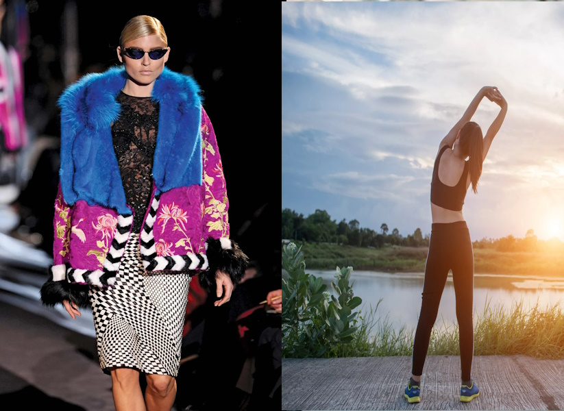
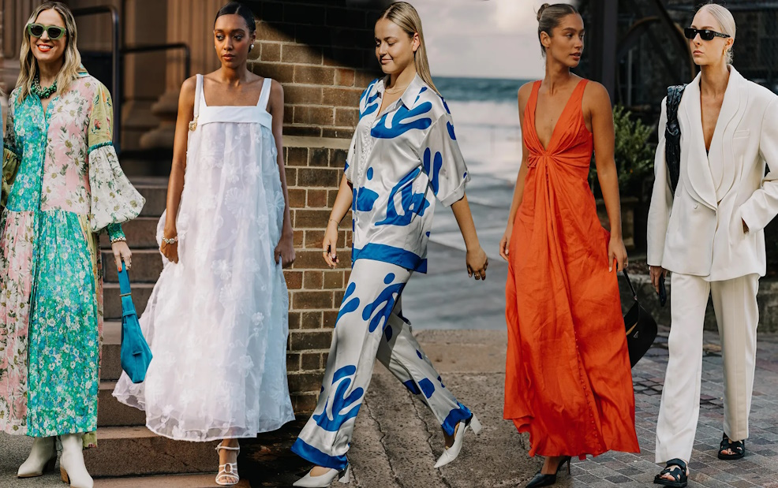
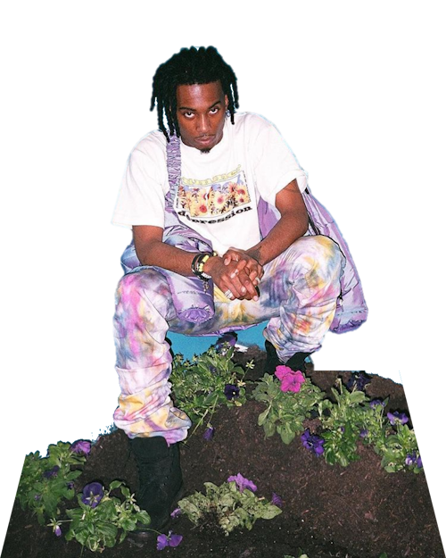

What is fashion and what is lifestyle?
Some believe the two have a huge difference, while
others think they are closely related. Regardless of your thinking, fashion and lifestyle are
both undeniably important components of our daily lives. It’s true that some people view
fashion as materialistic and shallow, but to reduce it to that oversimplifies it and leaves
out the cultural importance and artistry of the field.
Differences

People frequently dress in accordance with what is trendy or in vogue. This might be the result
of following fashion trends, a desire to be stylish, or a number of other factors. However,
lifestyle decisions vary. Chic people make decisions focusing on how they will impact their way
of life as a whole. For instance, someone might decide to purchase eco-friendly apparel because
it aligns with their environmental principles.
Summary
Fashion can represent your mood, personal style, or current trends. It is an expression of who
you are. On the other hand, your way of life refers to how you conduct your daily affairs. It
includes your food, exercise regimen, social life, and work/life balance, among other things.
Your lifestyle and fashion may overlap, but they are not the same thing. While lifestyle refers
to a way of life, fashion is all about the things you wear and the trends you follow. It involves
your way of life, your diet, your leisure activities, and the people you associate with.
To have a chic lifestyle, you need to be well-rounded and stylish in all aspects of your life.

This website aims to provide a comprehensive understanding of a fashion lifestyle, delving into
its essence and significance. It will offer valuable insights into various fashion brands, tracing
their histories and examining their profound impact on the world. Through engaging content and
detailed narratives, visitors will explore the dynamic interplay between fashion and our society,
appreciating how these brands have shaped cultural trends and influenced global perspectives. By
celebrating the richness of fashion's history and its transformative power, the website seeks to
foster a deeper appreciation for the artistry and innovation that define the fashion lifestyle.

Quiz
Question

SCAN THIS FOR WEBSITE LINK